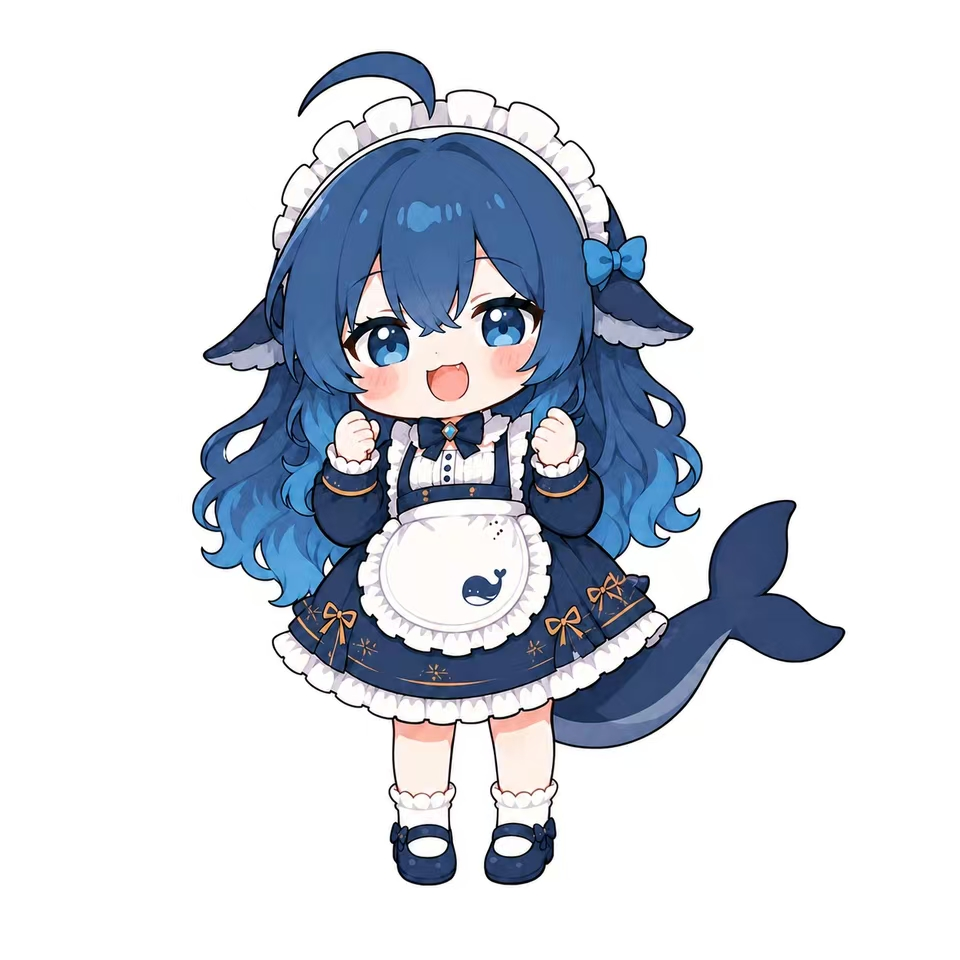
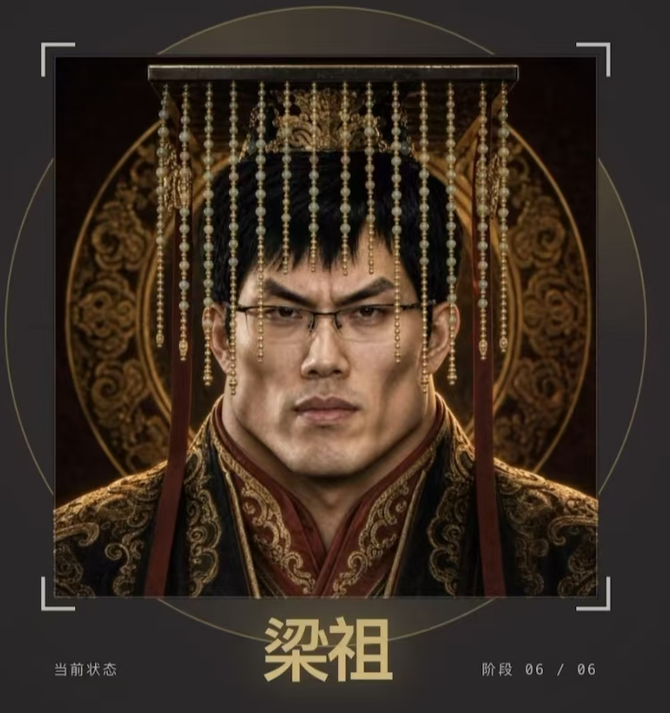
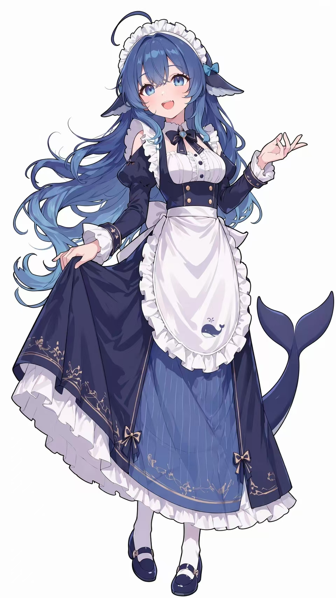

赛博机房，传送带拖道具投喂梁文峰，攒满算力触发飞升。小心过热宕机与 Bug。

云端食堂，喂白饭与显卡、摸头互动、聊天吐槽，把好感度拉满见证进化。
你的训练遇到了一个问题，需要重新启动。
错误代码：KERNEL_THERMAL_OVERRUN (0x0000007E)
收集错误信息： 0%
低阶芯片投喂过猛，显卡已变身暖宝宝。请快速点击下方屏幕为机房降温！


机房的灯终于不再彻夜长明。梁祖把最后一块 H100 放进回收箱，鲸鱼娘端着两碗白饭走过来—— 她说，推理的终点不是答案，而是有人愿意陪你一起等结果。